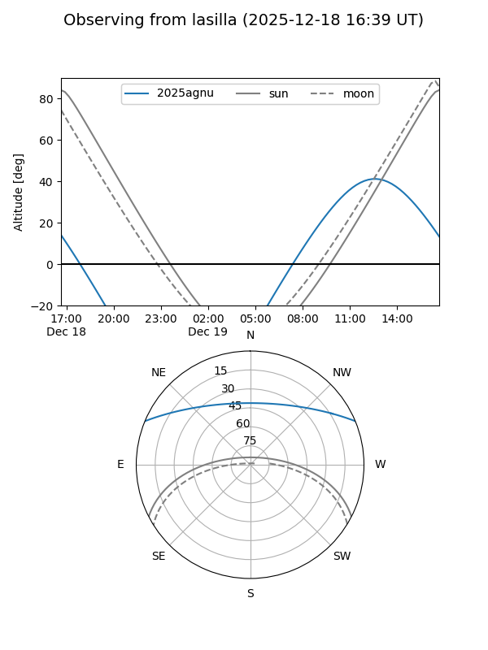
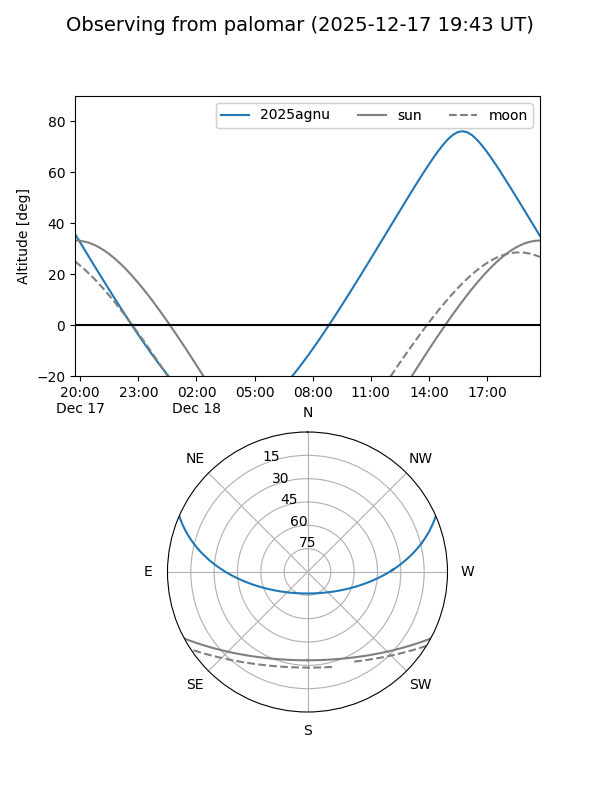

2025agnu
Target 2025agnu at 2025-12-18 11:18
Aliases and brokers:
FINK: fink-portal.org/ZTF25acftxyd
Lasair: lasair-ztf.lsst.ac.uk/objects/ZTF25acftxyd
ALeRCE: alerce.online/object/ZTF25acftxyd
TNS: wis-tns.org/object/2025agnu
YSE: ziggy.ucolick.org/yse/transient_detail/2025agnu
alt names
ZTF25acftxyd (ztf,fink_ztf)
2025agnu (tns,yse)
Coordinates:
equatorial (ra, dec) = 206.1060,+19.66684
equatorial (HMS+DMS) = 13:44:25.43,+19:40:00.63
galactic (l, b) = (4.1704,+75.75079)
Photometry
last ztfg=20.02
3 ztfg detections
Lightcurve

Visibility


Additional plots